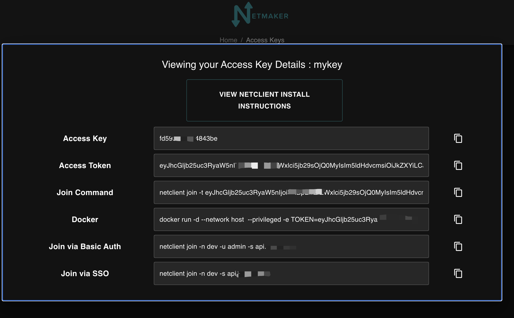

K3s跨云厂商部署
为什么要打造跨云厂商部署，因为云服务资源非常有限的，部署容器效率等等方面，造成这么一需求来，本篇采用k3s做为方案
Wireguard
Wireguard 能让处于不同网络的主机组成一个子网，是一种高性能的廉价组网方案，是基于最前沿密码学构建的轻量、快速、安全、现代化的开源VPN Wireguard还是个跨平台，小到微型嵌入式设备，大到超级计算机，常用Windows、MacOS、Linux、iOS和安卓操作系统平台，WireGuard都能按照预期高效运行，该代码将被合并到到Linux主线5.6内核中
Netmaker
Netmaker 是一个用来配置 WireGuard 全互联模式的可视化工具，它的功能非常强大，不仅支持 UDP 打洞、NAT 穿透、多租户，还可以使用 Kubernetes 配置清单来部署，客户端几乎适配了所有平台，包括 Linux, Mac 和 Windows，还可以通过 WireGuard 原生客户端连接 iPhone 和 Android
K3s
K3s 是一个完全兼容，轻量级的 Kubernetes 发行版
环境准备
需要三台机器，一个公网IP
机器清单
| Node | Local | IP | Network | OS | Specification |
|---|---|---|---|---|---|
| Master | aliyun | 1.x.x.x | VPC/EIP | Ubuntu 22.04.1 LTS | 2C2G |
| Node1 | VM | 10.x.x.x | Lan Private IP | Centos 7 | 8C8G |
| Node2 | VM | 10.x.x.x | Lan Private IP | Centos 7 | 2C4G |
内核升级
目前wg已经被合并到5.6内核了，如果你的机器内核大于这个版本，你需要装wireguard-tools工具即可，升级内核或者下载wireguard工具该链接如下
apt install wireguard
wg --version
网络规划与部署
Wireguard可以使用wg命令操作，操作wg有Netmaker和Wg Gen Web易用的工具，这里使用Netmaker
安装Netmaker
Netmaker 需要安装到有公网IP节点上[Master]
另外还需要域名，如果不需要域名，下载好自行把对应的domain改成IP
dashboard.example.com
api.example.com
broker.example.com
nm.example.com
安全防火墙需要放行 TCP:80 443 UDP:51820-51830
wget -qO /root/nm-quick-interactive.sh https://raw.githubusercontent.com/gravitl/netmaker/master/scripts/nm-quick-interactive.sh && sudo chmod +x /root/nm-quick-interactive.sh && sudo /root/nm-quick-interactive.sh
访问Netmaker
- 访问
https://dashboard.<your domain>

创建网络
输入名称和IP，不想操作可以点击AUTOFILL，创建成功在列表会显示dev

创建Access Key
name 设置密钥的名称
uses 代表这个网络能使用多少节点，这里设置为10



安装netclient
在 master/node1/node2 安装 netclient 执行建立连接
curl -sL 'https://apt.netmaker.org/gpg.key' | sudo tee /etc/apt/trusted.gpg.d/netclient.asc
curl -sL 'https://apt.netmaker.org/debian.deb.txt' | sudo tee /etc/apt/sources.list.d/netclient.list
apt update
apt install netclient
netclient -v
建立连接
netclient join -t <AccessToken>
建立连接
netclient connect -n dev
断开连接
netclient disconnect -n dev
验证网络
wg
安装k3s
要求
两个节点不能具有相同的主机名。如果多个节点有相同的主机名，
使用--with-node-id选项为每个节点附加一个随机后缀，或者使用--node-name或$K3S_NODE_NAME为添加到集群的每个节点设计一个独特的名称
硬件
最少使用2c2g
网络
K3s Server 需要 6443 端口才能被所有节点访问
使用 Flannel Wireguard 后端时，节点需要能够通过 UDP 端口 51820 和 51821（使用 IPv6 时）访问其他节点。该节点不应侦听任何其他端口。K3s 使用反向隧道建立节点与 Server 的出站连接，所有 kubelet 流量都通过该隧道进行。但是，如果你不使用 Flannel 并提供自己的自定义 CNI，那么 K3s 不需要 Flannel 所需的端口
本篇文档使用 wg 打通需要flannel cni配合
在[node1]安装k3s server
为什么要在 node1 节点安装k3s server，是因为云服务资源不够，需要在内网安装，内部服务器随便折腾
使用国内链接下载，server exec flannel-iface 加上wg定义的网卡名称
安装
curl -sfL https://rancher-mirror.rancher.cn/k3s/k3s-install.sh | INSTALL_K3S_MIRROR=cn INSTALL_K3S_EXEC="server --flannel-iface nm-dev" sh -
停止
sh /usr/local/bin/k3s-killall.sh
卸载
sh /usr/local/bin/k3s-uninstall.sh
获取token
cat /var/lib/rancher/k3s/server/node-token
查看节点
kubectl get nodes
在[master/node2]安装k3s agent
安装
10.x.x.x 是 node1 wg的ip
public ip 是对外显示的ip
curl -sfL https://rancher-mirror.rancher.cn/k3s/k3s-install.sh | INSTALL_K3S_MIRROR=cn K3S_URL=https://10.x.x.x:6443 K3S_TOKEN=<token> INSTALL_K3S_EXEC="agent --flannel-iface nm-dev --node-external-ip <public ip>" sh -
卸载
sh /usr/local/bin/k3s-agent-uninstall.sh
将[node1]文件移动到对应的master/node2节点，否则agent 无法执行 kubectl 命令
scp -r /etc/rancher/k3s/k3s.yaml root@[master/node2]:/etc/rancher/k3s/
在master/node2节点修改k3s.yaml
server: https://{node1}:6443
添加变量
echo "export KUBECONFIG=/etc/rancher/k3s/k3s.yaml" >> ~/.bash_profile
source ~/.bash_profile
查看节点
kubectl get nodes
验证部署
创建 namespace
kubectl create namespace dev
创建 nginx.yaml 文件
apiVersion: apps/v1
kind: Deployment
metadata:
name: pc-deployment
namespace: dev
spec:
replicas: 3
selector:
matchLabels:
app: nginx-pod
template:
metadata:
labels:
app: nginx-pod
spec:
containers:
- name: nginx
image: nginx:latest
ports:
- containerPort: 80
---
apiVersion: v1
kind: Service
metadata:
name: service-nodeport
namespace: dev
spec:
selector:
app: nginx-pod
type: LoadBalancer
ports:
- port: 30800
targetPort: 80
执行文件
kubectl create -f nginx.yaml
查看pod,svc
kubectl get pods,svc -n dev -owide
访问部署各个节点nginx
curl -I http://<public ip>:30800